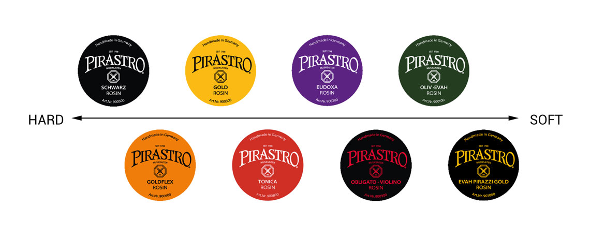

Here we are! Helping you to choose the perfect accessories that fits your violin!
Strings

Choosing the right strings depends on your playing style and sound preference. Steel strings give a bright, focused sound, while synthetic or gut strings give a warmer, richer tone. Consider durability and ease of play too.
Here are some main types of violin strings:
Steel-core strings – bright, powerful, stable tuning (good for beginners and fiddlers).
Synthetic-core strings – warm, balanced, more like gut but easier to maintain (popular with most players).
Gut-core strings – rich and complex tone but harder to tune (often used in baroque or professional settings).
Popular Brands:
Dominant (Thomastik-Infeld) – very popular synthetic strings, warm and balanced.
Pirastro Obligato – dark, warm tone, good for rich sound.Pirastro Evah Pirazzi – bright, projecting sound, used by soloists.
D’Addario Helicore – reliable steel-core strings, clear tone, often for students.
A violin mute reduces volume for practice or quiet performance. Rubber or silicone mutes are light and easy to attach. Heavier metal mutes give a stronger dampening effect but may affect tone.
Mute
Rosin

Rosin helps the bow grip the strings. Light rosin is ideal for warm, smooth tones, while dark rosin gives more grip and produces a louder, sharper sound. Match rosin type to your strings and climate.How to choose the right rosin for you blahblahblah...
A shoulder rest supports comfort and posture. Look for one that fits your shoulder shape and violin size. Adjustable rests are versatile, while foam or padded rests add extra comfort.
Shoudler rest